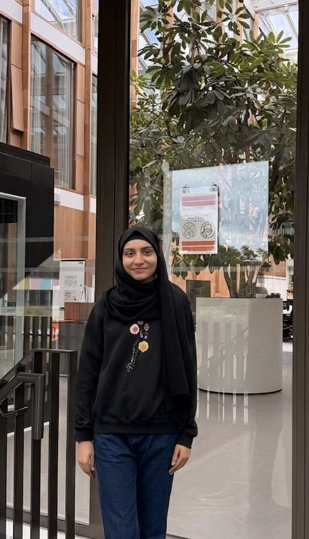

{{ p.title }}
Problem · {{ p.problem }}
Contribution · {{ p.contribution }}
View details →
{{ p.linkCountLabel }}
PhD Researcher in Cognitive Robotics · Robotics & AI Researcher
My research lies at the intersection of robot perception, affordance learning, and hierarchical reinforcement learning. I aim to develop intelligent robotic systems that can perceive, reason, and act autonomously in the physical world.

01 — About
I am a PhD Researcher in Cognitive Robotics at Radboud University, where I investigate how robots can learn to understand, interact with, and manipulate objects in complex real-world environments. My research focuses on developing intelligent robotic systems that combine visual perception, affordance learning, and hierarchical reinforcement learning to perform long-horizon manipulation tasks with greater robustness, efficiency, and generalization.
My work explores how robots can identify actionable opportunities in their environment, learn reusable skills, and autonomously plan and execute complex behaviors. By integrating advances in robot perception, embodied AI, and machine learning, I aim to contribute to the development of more capable and adaptable autonomous systems that can operate effectively beyond controlled laboratory settings.
Research interests
02 — Education
University of Girona, Spain & University of Zagreb, Croatia
Semesters 1 & 2 — University of Girona
Autonomous Systems, Multiview Geometry, Machine Learning, Probabilistic Robotics, Robot Manipulation, and Hands-on Planning, Perception, Localization & Intervention.
Semester 3 — University of Zagreb · Aerial Robotics & Multi-Robot Systems
Aerial Robotics, Multi-Robot Systems, Deep Learning, Robotic Sensing Perception & Actuation, Human-Robot Interaction, Ethics and Technology.
Mehran University of Engineering and Technology, Jamshoro, Pakistan
Thesis: Deep Learning Based Smart Spraying System for Disease Detection of Vegetables.
03 — Experience
{{ x.org }}
{{ x.location }}
04 — Selected work
Problem · {{ p.problem }}
Contribution · {{ p.contribution }}
{{ p.problem }}
Details →05 — Toolkit
{{ grp.group }}
06 — Contact
I'm open to research collaborations across cognitive robotics, manipulation and embodied AI.
Research problem
{{ open.problem }}
Key contribution
{{ open.contribution }}
{{ open.desc }}